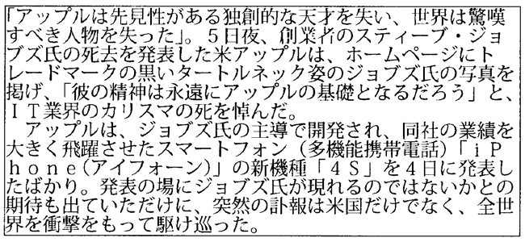
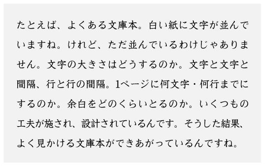

ユニバーサルデザイン
ユニバーサルデザインとは、「すべての人のためのデザイン」を意味し、年齢や障害の有無、体格、性別、国籍などにかかわらず、できるだけ多くの人にわかりやすく、最初からできるだけ多くの人が利用可能であるようにデザインすることをいいます。
背景と色の組み合わせ
背景と色の組み合わせを意識することで、見やすさに大きな差が生まれます。例えば、青の背景に紫の文字で作られたwebサイトを考えると、見にくいことがはっきりわかります。このように、寒色と寒色や暖色と暖色の組み合わせはwebサイトを見にくくしてしまいます。
これらを考慮すると、どのような組み合わせが良いのでしょうか。例えば、強調したい部分は目立つようにするために赤を利用したり、webサイトを作る際に色を使い過ぎず、2色から3色で表現するのもお薦めします。
では実際に背景と色の組み合わせを考えたものと考えていないものを比較してみましょう。
<組み合わせを考えて作ったもの>

<組み合わせを考えずに作ったもの>

この2つを比べると、文字はできる限り白にして読みやすさを考慮した同志社大学のwebサイトに対して、chupa chupsのwebサイトはインパクトがありますが、色を何色も使っていて見にくいものとなっています。
書体
フォントの変更
文字にも文章によって、見やすい字体があります。フォントはそれぞれ多種多様な雰囲気を持っており、それによって同じ言葉でも私たちに与える人物像・印象が大きく変わります。なお、フォントを変更するときには、CSSの [font-family]プロパティを使用します。
p{
font-family: フォント名;
}
フォント名の部分にはserifやsans-serifなど、使いたいフォントによって書き換えます。
複数のフォントの指定
複数の字体を指定することもできます。（カンマ「,」でつなげる）
p{
font-family: serif, sans-serif, cursive;
}
指定の順番は「先に書いたもの」が優先されます。この場合だとserifが最優先となります。
よく使われるフォントと特徴
- serif「serif」は明朝体（セリフ体）。本文で使われることが多い。
- sans-serif「sans-serif」はゴシック体（サンセリフ体）。タイトルで使われることが多い。ゴシック体は，太さが均一なので読みやすい。
- cursive「cursive」は筆記体によく使用されます。
- fantasy「fantasy」はファンタジー。かわいい系の文字であるが、多用するとウザい。
- monospace「monospace」は等幅。横幅が一定なので、プログラミングコードなどの表記で使われる。
企業から見るフォント
上記のフォント以外にもフォントの種類はたくさんあります。その中のいくつかを、企業のロゴを使ってみていこうと思います
Futura 「futura」は円と直線の組み合わせでできています。王道感と今っぽさを両方出すことができるため様々な業界のロゴに使われています。
Helvetica「Helvetica」は簡潔で個性が抑えられたフォントであり、汎用性が高く、個性が抑えられているので読みやすいです。
他にも、Comic Sans MSやArial Blackなど様々あります。また、WindowsやMacなどで使えるフォントが異なる場合があります。
行間
ここでは、行間の変更の仕方と行間による見え方について説明します。まず、行間による見え方の違いについて説明したいと思います。
-
<行間を意識せず作った場合>

-
<行間を意識して作った場合>

上記の2つを比較すると、行間を意識すると文字がごちゃごちゃするのを避けることができ、文字が読みやすくなります。また、行間が考えられた文章だと、目に入ってくる情報量にも差があります。 次に、行間の変更の仕方について説明したいと思います。
行間の幅を調整するために、line-heightというプロパティを使う必要があります。記述方法として、今回は基本的なやり方を説明したいと思います。その方法は、値と単位を組み合わせてやるやり方です。下記の例のように数値に単位をつけることで行間を調整します。
(例) line-height:30px
*pxは単位
文字の大きさ
ウェブサイトの基本的なフォントサイズは16pxと言われていますが、そのウェブサイトのターゲットに合わせて適切な大きさに変えることが好ましいです。文字の大きさを変更するには、以下のようなコードを使用します。
p{
font-size: 16px;
}